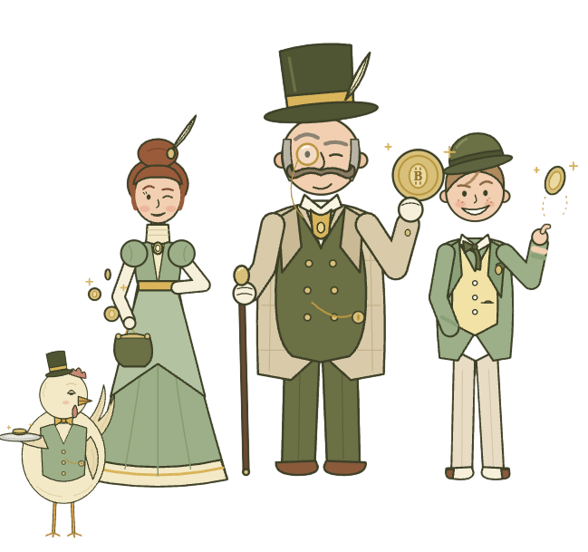
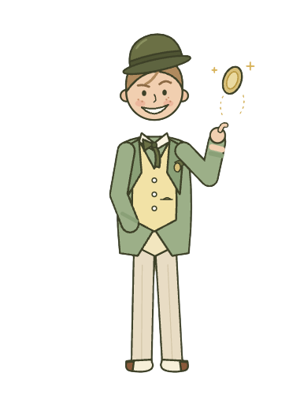
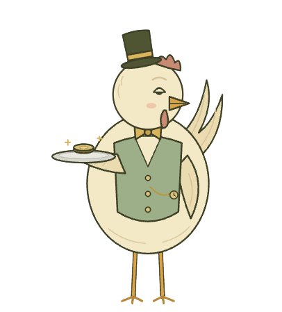
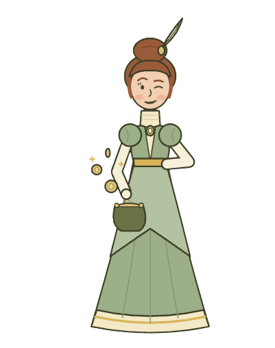
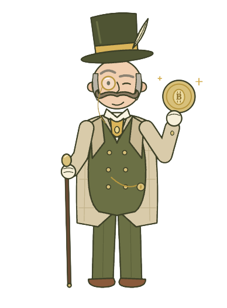

Avicultura,
clara y digital.
Explora una propuesta que conecta producción de huevos, participación y seguimiento digital. El prototipo permite recorrer el modelo y consultar datos demostrativos.
Modo demostración: no procesa dinero, no opera con Bitcoin y no garantiza rendimientos. Las cifras son ilustrativas.
Panel de simulación
Cuota individual simulada dentro del lote general de 1,000 gallinas del proyecto.

Tres componentes.
Un mismo ecosistema.
BitEggCoin integra tecnología, actividad productiva avícola y participación económica. El prototipo organiza la información del modelo para recorrer sus activos, producción y seguimiento; no representa transacciones financieras reales.

Tecnología
Plataforma web, registro de usuarios, autenticación, base de datos, respaldos y controles de acceso.
Producción avícola
Gallinas ponedoras como activos productivos, producción, clasificación, almacenamiento y comercialización de huevos.
Participación
Registro y seguimiento digital de la información relacionada con la participación dentro del modelo.
De la idea al
prototipo.
El documento plantea una propuesta tecnológica y económica aplicada al sector avícola de Guatemala.
Iniciación
Problema, propuesta, alcance, objetivos y justificación.
Planificación
Cronograma, presupuesto, recursos, riesgos y base legal.
Empresa
Estructura, administración, departamentos, cultura y políticas.
Mercado
Análisis situacional, objetivos, estrategias, tácticas y medición.
Estudio técnico
Ingeniería, operación, tecnología, instalaciones y ubicación.
Producto
Idea, definición, prototipo, diseño, validación y comercialización.
Ejecución
Implementación, actividades, tareas, cronograma y viabilidad.
Seguimiento
Monitoreo, desviaciones y acciones correctivas.
Cierre
Resultados, objetivos, lecciones aprendidas y recomendaciones.

Consulta el proyecto completo.
Descarga la versión final del documento utilizado como base de esta plataforma.
DOCUMENTO SDLC
Consulta el documento de documentación del proyecto.
SDLC REPOSITORIO
Consulta los repositorios del proyecto. Landing page y Simulador
Conoce BitEggCoin.
Del ave al dato.
Flujo productivo planteado para la operación simulada.
Una propuesta para el contexto guatemalteco.
El mercado objetivo propuesto se concentra inicialmente en personas adultas residentes en Guatemala, con acceso a Internet, familiaridad con servicios digitales y capacidad económica para participar en el modelo. Esta segmentación deberá validarse mediante investigación directa.
Recursos y presupuesto.
Valores del escenario académico; no constituyen cotizaciones comerciales vigentes.
- Gallinas ponedoras: Q68,000.00
- Instalaciones: Q60,000.00
- Equipamiento avícola: Q36,800.00
- Equipo de cómputo: Q9,000.00
- Desarrollo inicial: Q15,000.00
- Otros recursos: Q17,500.00
- Alimento concentrado: Q19,500.00
- Personal operativo: Q8,000.00
- Administración: Q5,000.00
- Servicios básicos: Q2,500.00
- Hosting y tecnología: Q1,000.00
- Otros costos: Q7,500.00
- Inversión inicial: Q206,300.00
- Contingencia 10%: Q20,630.00
- Primer mes: Q43,500.00

El documento señala que el escenario económico no demuestra todavía sostenibilidad financiera basada únicamente en la comercialización de huevos; antes de una implementación real deberán revisarse costos, productividad, comercialización y condiciones legales.
Todo lo necesario,
en un solo lugar.
El prototipo contempla una separación entre funciones públicas y privadas, buscando claridad, facilidad de uso, seguridad y transparencia.
Una estructura pequeña y funcional.
Para la etapa inicial se proponen tres empleados permanentes y servicios profesionales externos según las necesidades.
avícolasTecnologíaFinanzas y
contabilidadMarketing y
comercialización
Transparencia antes de crecer.
El proyecto identifica riesgos productivos, económicos, financieros, tecnológicos, de ciberseguridad, operativos, comerciales, legales, reputacionales, ambientales y logísticos.
La documentación indica que el término “participación” se mantiene sin clasificarla como acción, valor, criptomoneda, token de inversión u otro instrumento financiero hasta contar con un análisis jurídico. Una implementación comercial requeriría asesoría jurídica especializada antes de recibir recursos de terceros o distribuir rendimientos.

BitEggCoin continúa como una propuesta tecnológica, empresarial y académica.
El documento concluye que el proyecto presenta condiciones para continuar como propuesta y prototipo, pero requiere más desarrollo, validación de mercado, análisis financiero actualizado y revisión jurídica antes de una implementación comercial.